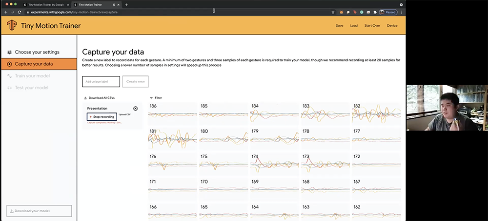
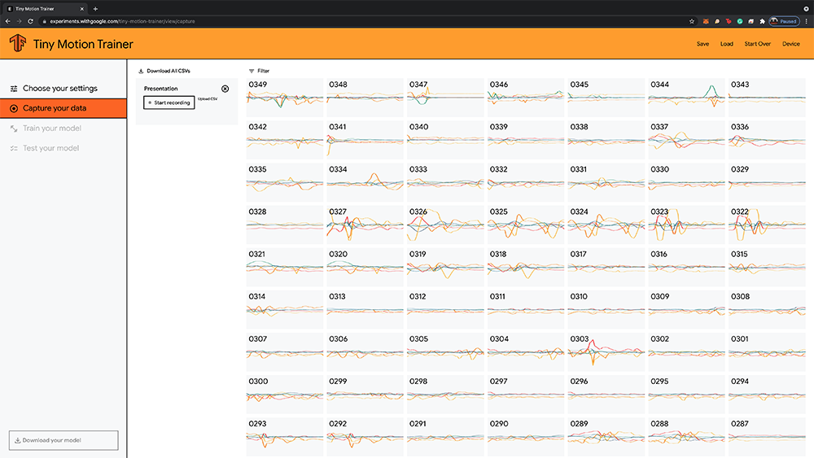

Semester One Week Seven: 27.09.21 - 01.10.21
Dissertation:
// 28.09.21 - Consultation: Research Proposal Outline with Vikas Kailankaje.
Graduation Project:
// 29.09.21 - Presentation: Cohort Seminar Atelier Sharing.
// 29.09.21 - Machine Learning Exploration: Affective State during Cohort Seminar Atelier Sharing.
#S01W07 Appendices:
// S01W07.A - Presentation: Cohort Seminar Atelier Sharing.
// 28.09.21 - Consultation: Research Proposal Outline with Vikas Kailankaje.
At this point, the RPO still needs a lot of work, still have a couple of readings I have to do before I can touch the Summary of Readings section. Research methods needs to be edited for clarity, Introduction seems to be mostly ok, but the last paragraph could be edited and expanded for clarity as well. One issus, was maybe that I repeated non-expert in my subtitle as well as in research objective, and that's something that was already implied. But I think this is just due to my imposter syndrome tackling this research topic. This has been something I've been struggling with since I started looking into the topic, I thought looking at it from a BA,MA,Research view in my compendium last year would have helped, which it did, but when reading deeper and diving into the nitty gritty, some of this issues resurface, especially when I face issues understanding some concepts, but it's something that I have to work on and will work on.
// 29.09.21 - Presentation: Cohort Seminar Atelier Sharing.
Keynote Preview of my Slides for the Cohort Seminar Presentation, note: My fonts and videos do not load on this embedded preview and there's some spacing issues with text cause the iframe squishes it (the embed's not the best but at least it works!), if you need the "fancy font" version with videos etc, please let me know!
Refer to Appendix SO1W07.A for presentation feedback transcript.
Was actually quite nervous sharing my research with the cohort (might be the imposter syndrome speaking here), but while preparing the deck, I realised that this might be a good chance to get some data (more on that in this week's exploration). But while working on the deck, it gave me the opportunity to really take a good second look at some of the experiments and see how they might or have benefitted me so far. This presentation came a good point to serve as like a review on my progress so far and although I might've done a bunch of things, I also realise that there's still a long way to go from here.
Was quite relieved that the comments I got were generally positive, I think there are some terms and details that I could have explained better, like explaining what the experiment I was doing while presenting better, so that Joselyn would not have mixed it up with tracking heart rate and also explaining the term "Affective Computing" as a field of research on it's own, so that Yasser would've had some context. I would like to say that I thought of the link between "Affective Communication" and "Effective Communication" that Yasser brought up, but happy accidents right? Glad it works out and might find a way to use that more in my writing. Guowen did bring up a good point on looking at physical communication and how that could be translated into my research, I think that's something that I've sort of overlooked in my readings, as I've been looking more at technological possibilities and just the idea of emotions, so maybe through looking at this, it could provide new insights into how my experiments can be designed in the future.
// End of this Section.
// 28.09.21 - Machine Learning Exploration: Affective State during Cohort Seminar Atelier Sharing.
So as mentioned earlier, I connected the Arduino Nano 33 BLE Sense to my finger as I was presenting to sort of see if it could pick up on markers of nervousness, such as shaking or figeting and wore it through my presentation to the cohort.
Image: Me doing a live demo of the trainer picking up on my motions during the presentation.
So firstly, it did detect movement (phew) was quite worried it wasn't going to work in the background or something would go wrong, but as I was looking at the data I realised two interesting points, firstly most of it was relatively low movement, so that could signify something like slight nervous shaking, then there were some spikes in movement throughout but not often, those might be more fidgeting or me tapping my fingers. I think there's opportunities to dive deeper into this, maybe I could train some models to recognise different motions such as just shaking, fidgeting, or tapping and then see if the motions match the data collected here. This could/would be stage two of this exploration.
Image: Snippet of data captured during presentation.
I thought this was an interesting experiment to run, what I can do with it remains to be seen at this point, but there's quite a bit of data gathered, and it would be interesting to further break it down and compare it against other "staged" benchmarks to see how they link up. I think I would revisit this set of data during project week and further break it down. I have a couple of hypotheses as to what some of these data collected could mean and would like to see if it's true.
-- End of the Week --
// S01W07.A - Presentation: Cohort Seminar Atelier Sharing.
Joselyn Sim
I like how you're using yourself for the experimentation, especially the one that you tracked how nervous you are during the presentation, so I was just thinking whether like can it track like, obviously its tracking your heartbeat (sorry Joselyn but it's not) so can it track that like as I'm standing in front of a boy, lets say it's my husband or something, then my heart rate goes up, can it track that, could you set it to track that?
Matthew Lau
So, actually this device doesn't track heartbeat, or at least that's not what I'm tracking now, it's mainly tracking movement for now and like distance and actions, but I could look into how other sensors could track heartbeat. But yeah I think there's different things that I could look at tracking along the way.
Yasser Suratman
I think its, I mean it's experimental, its a little bit. There is the term that you use quite a fair bit, and I don't know whether you use it interchangeably but it's affective communication and effective communication, is that intentional?
Matthew Lau
Uh no it's not, ok so affective communication, is communication of affective states, but when I use effective communication, it's about getting the message across.
Yasser Suratman
Ok yeah I just wanted to clarify, because it's interesting maybe looking at it from a linguistic standpoint, I mean I'm not even remotely technologically where you are right now with coding and stuff. But I think it's interesting that it is just a term that is used in a very contentional hypothesis, because when you talk about affective communication, you remove the idea of technology and all that, there is an emotive component so I think, I don't know whether it's an accident that you kind of put these terms together in your hypotheses, because you are, you're looking at it from a less humanistic approach, but it is about interaction and human connection in a way. But I think it's intelligent, or by accident, but whatever you did I think it works. So I'm also like Jos, less excited but looking forward to the experimentations that you're doing, but I think the only advice that I can give you right now, because the studio is still going on and you're still picking up the pieces here and there, but I think Vikas and Andreas really gave you a splendid advice to just do. Students are just, they are just not doing enough, so that's the best advice. So one thing about your RPO, and your design statement and introduction, I think there's a bunch of words that you might want to streamline a little bit, cause it's a mouthful man so maybe there's something you might want to do about it. Alright good job though.
Lim Guowen
Alright so I have a question, but before that a comment on the part where you said it was the "boring part" (ok I mean more like dry part, not boring, I'm really enjoying the reading and writing), I think that was really quite helpful in contextualizing your explorations, which actually lead me to this question. Whether or not the prior explorations that were done were very necessary in giving you technological confidence moving forward, like just trying to find ways of interaction. But I was wondering, now that you're kind of focus on the affective elements of communication, whether or not you're looking at physical communication first and see what about physical communication can be affective or is affective and how that can be translated into, maybe like deliberate exploration about touch, or a deliberate exploration about posture, and then kind of explore how that translates itself into your exploration. That was my thought.
Andreas Schlegel (on Whatsapp, post presentation)
@glenn @matthew well done! And of course I am happy to see (and I hope Vikas as well) that you are refining your ideas step by step and equally important that you are experimenting with materials that you may think you are yet unfamiliar with (like electronics, laser cutting, data generated artefacts, code, physical computing, wearables, sensors, etc). It takes time to become an expert, but in the long run I hope this is what you are aiming for. Very curious to see how your projects (and your classmates’) will progress. sometimes it takes a bit of time to get struggles, hesitation, uncertainties resolved but with experimentation, a goal and plan in mind this will clear the way.
Vikas Kailankaje (on Whatsapp, post presentation)
Good pts. We don't expect something crystal clear at this stage
// End of Appendix A.